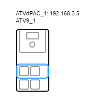
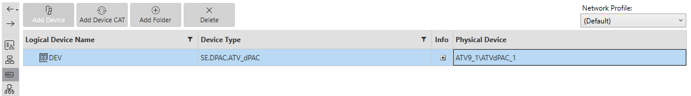
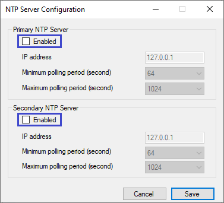
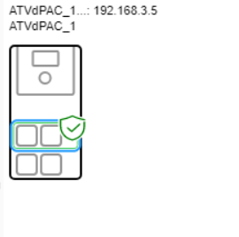
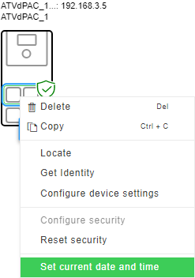
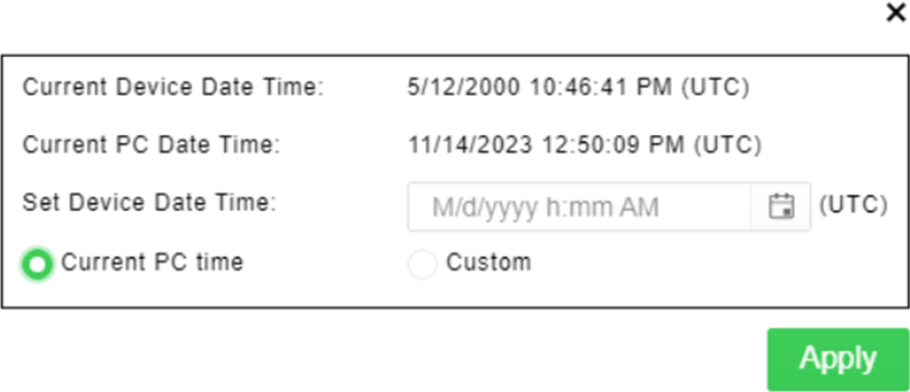
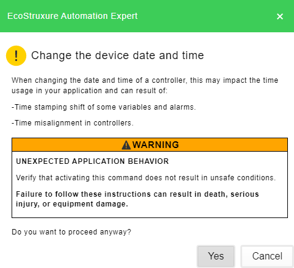

Use the NTP (Network Time Protocol) Server Configuration dialog to synchronize the clock of the selected device to a time value provided by an NTP server. This allows you to configure the server information for the ATV Distributed PAC NTP client, using time zone settings to ensure accurate local time.
Use DST (Daylight Savings and Time zone) to automatically adjust the clock of your device forward or backward by a specified amount at the start and end of daylight saving time periods. Additionally, you can use DST to change the time zone of your device, configure the time zone information of your device to GMT offset, or to Daylight saving time, etc. This configuration is used by the NTP client if active, and by local time management otherwise. Therefore, if you set the device time via EcoStruxure Automation Expert or the Graphic Display Terminal, it will be affected by the DST configuration.
Update the firmware package of:
The Drive (Refer to the firmware update with EcoStruxure Automation Device Maintenance chapter for more details on this step).
The ATV dPAC (Refer to the firmware update with EcoStruxure Automation Device Maintenance chapter for more details on this step).
Update the labels and languages of the Graphic Display Terminal (VW3A1111) (Refer to the firmware update with EcoStruxure Automation Device Maintenance chapter for more details on this step).
|
Device |
ATV6·· |
ATV9·· |
ATV340 |
ATV dPAC |
Altivar Labels for Graphic Display Terminal (VW3A1111) |
|---|---|---|---|---|---|
|
Firmware Version greater than |
23.0.23211.00 3.7IE94_B04 |
23.0.23211.00 3.8IE94_B04 |
23.0.23211.00 3.6IE94_B04 |
23.1.23313.00 3.1IE14B05 |
1.45 |
Follow this procedure to set the initial time on your device:
|
Step |
Action |
|---|---|
|
1 |
Open EcoStruxure Automation Expert software. |
|
2 |
Open your solution (or create a new one). |
|
3 |
Add an ATV dPAC in the Physical Devices
 |
|
4 |
Add an ATV dPAC device in the Logical Devices
 |
|
5 |
Disable the NTP Server in the Logical Devices
 |
|
6 |
Login and deploy device configuration
|
|
7 |
NOTE: Follow the instructions written in this step (step 7) only if the security is not configured, otherwise, move directly to step 8.

NOTE: In case you cannot select Reset Security, try to disable the PC firewall and/ or restart your device. If the problem persists, consult your system administrator.
|
|
8 |
Right click on your device, then select Set current date and time.  |
If you do not have the NTP server use the following procedure to manually set the time of your device.
|
Step |
Action |
|---|---|
|
1 |
You can either select Current PC time or custom then type the date and time, to set device date and time. |
|
2 |
Click Apply.  |
|
3 |
Click Yes to confirm the safety message.  |